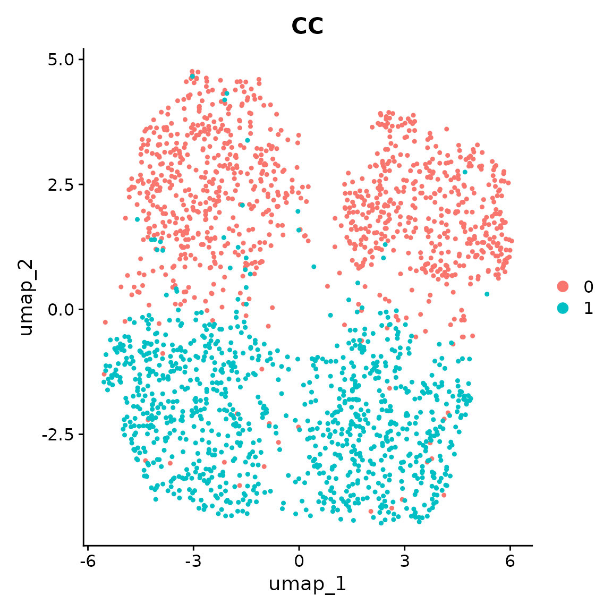
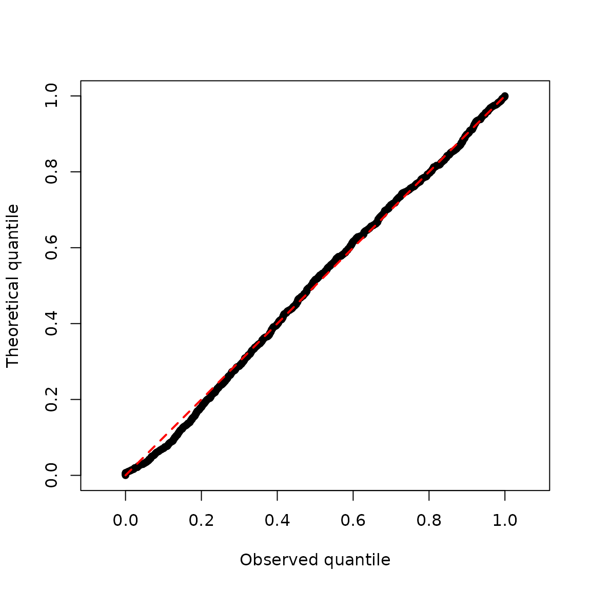
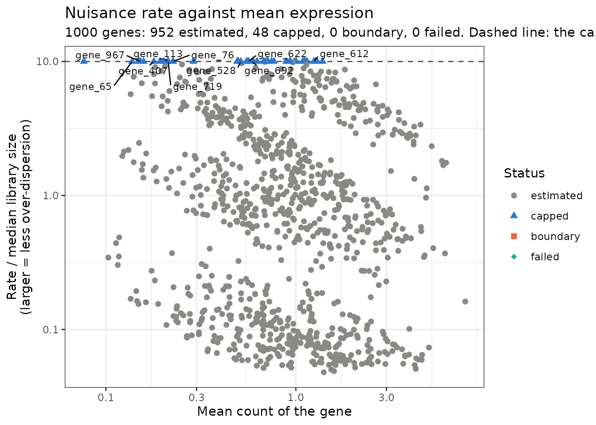
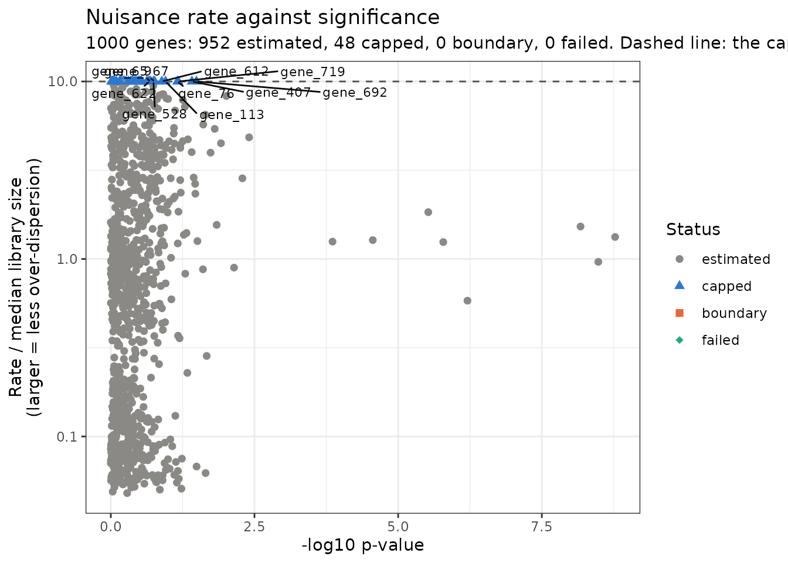
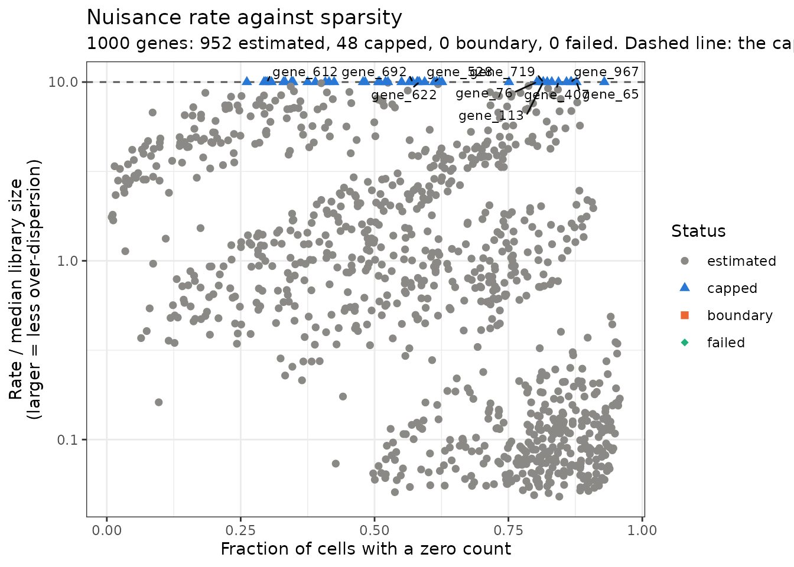
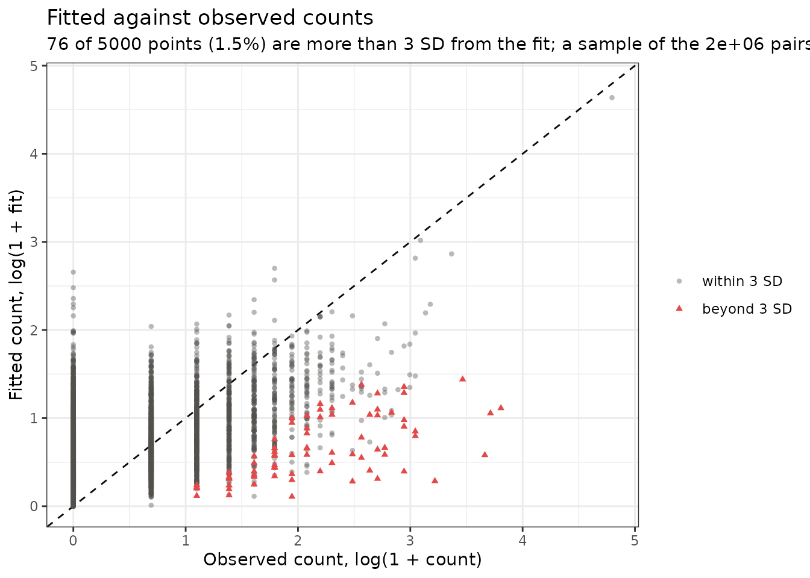
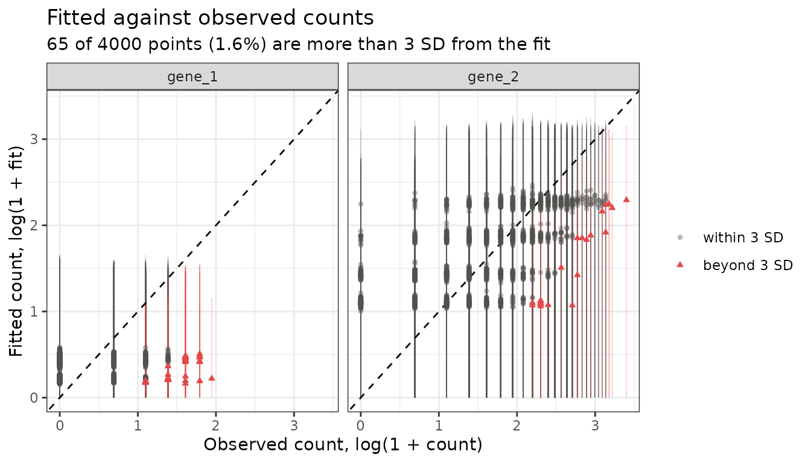

Purpose
The simulations here are meant to be portable, toy-examples of eSVD2, with the intent to demonstrate that an installation of eSVD2 was successful.
This vignette was rendered with eSVD2 version 1.2.0. A
successful installation of eSVD2 is required for this. See
the last section of this vignette for the session information used when
it was rendered. The whole vignette should complete in less than 2
minutes.
Overview
Broadly speaking, eSVD-DE (the name of the method, which is
implemented in the eSVD2 package) is a pipeline of 6
different function calls. The procedure starts with primarily 3
inputs,
-
dat, eithermatrixordgCMatrix, withnrows (forncells) andpcolumns (forpgenes). We advise making sure each row/column of either matrix has non-zero variance prior to using this pipeline. -
covariates, amatrixwithnrows with the same rownames asdatwhere the columns represent the different covariates Notably, this should contain only numerical columns (i.e., all categorical variables should have already been split into numerous indicator variables), and all the columns incovariateswill (strictly speaking) be included in the eSVD matrix factorization model. -
metadata_individual, afactorvector with lengthnwhich denotes which cell originates from which individual.
library(eSVD2)
# Seurat is only used for the UMAP below; every eSVD2 step runs without it.
has_seurat <- requireNamespace("Seurat", quietly = TRUE)
# ggplot2 and ggrepel are only used for the diagnostic plots at the end.
has_ggplot <- requireNamespace("ggplot2", quietly = TRUE) &&
requireNamespace("ggrepel", quietly = TRUE)Simulating data
We create a simple dataset that has no differentially expressed genes
via the eSVD2::generate_null() function.
set.seed(10)
res <- eSVD2::generate_null()
covariates <- res$covariates
metadata_individual <- res$metadata_individual
obs_mat <- res$obs_matIf you have Seurat also installed, you can run the following lines as well (the chunk is skipped otherwise),
set.seed(10)
meta_data <- data.frame(covariates[, c("CC", "Sex", "Age")])
meta_data$Individual <- metadata_individual
seurat_obj <- Seurat::CreateSeuratObject(counts = Matrix::t(obs_mat), meta.data = meta_data)
Seurat::VariableFeatures(seurat_obj) <- rownames(seurat_obj)
seurat_obj <- Seurat::NormalizeData(seurat_obj)
seurat_obj <- Seurat::ScaleData(seurat_obj)
seurat_obj <- Seurat::RunPCA(seurat_obj, verbose = FALSE)
seurat_obj <- Seurat::RunUMAP(seurat_obj, dims = 1:5)
Seurat::DimPlot(seurat_obj, reduction = "umap", group.by = "CC")
The separation between case and control cells is purely determined by the individual covariates of Age and Sex, not the case-control status.
Using eSVD-DE
-
Step 1 (Initializing the eSVD object): First, we
initialize the object of class
eSVD, which we will calleSVD_obj. This is done using theeSVD2::initialize_esvd()function. All the following operations will useeSVD_objfor all calculations through the usage of this method. This is where we pass the inputsdat,covariates, andmetadata_individual. Notice that aftereSVD2::initialize_esvd()(and later, aftereSVD2::opt_esvd()) we always calleSVD2::reparameterization_esvd_covariates()to ensure that the fit remains identifiable.
Empirically, we have found it useful to set
omitted_variables as the Log_UMI and the batch
variables. (Here, there are no batch variables.) This means that when
eSVD2 reparameterizes the variables, it does not fiddle with the
coefficient for Log_UMI. We found this beneficial since the
coefficient for specifically the covariate Log_UMI bears a
special meaning (as it impacts the normalization of the sequencing depth
most directly), and we do not wish to “mix” covariates correlated with
Log_UMI too early. (Overall, this is not a strict
recommendation, however, we have found this practice to be beneficial in
almost all instances we have used eSVD2, so we ourselves have not tried
deviating from this convention.)
This typically looks like the following.
set.seed(10)
eSVD_obj <- eSVD2::initialize_esvd(
dat = obs_mat,
covariates = covariates,
metadata_individual = metadata_individual,
case_control_variable = "CC",
bool_intercept = TRUE,
k = 5,
lambda = 0.1,
verbose = 0
)
eSVD_obj <- eSVD2::reparameterization_esvd_covariates(
input_obj = eSVD_obj,
fit_name = "fit_Init",
omitted_variables = "Log_UMI"
)
names(eSVD_obj)
#> [1] "dat" "covariates" "param" "fit_Init" "latest_Fit"
#> [6] "case_control" "individual"-
Step 2 (Fitting the eSVD object): We now fit the
eSVD. Typically, we recommend fitting twice (i.e., calling
eSVD2::opt_esvd()twice) due to the non-convex nature of the objective function. In the first call ofeSVD2::opt_esvd(), hold all the coefficients to all the covariates aside from the case-control covariate (here, denoted as"CC"so we remove as much of the case-control covariate effect as possible. Then, in the second call ofeSVD2::opt_esvd(), we allow all the coefficients to be optimized.
Note that in the last fit of eSVD2::opt_esvd(), we do
not set any omitted_variables. This is our typical
recommendation – it is good to allow all coefficients to be
reparameterized right before the optimization is all done.
set.seed(10)
eSVD_obj <- eSVD2::opt_esvd(
input_obj = eSVD_obj,
l2pen = 0.1,
max_iter = 100,
offset_variables = setdiff(colnames(eSVD_obj$covariates), "CC"),
tol = 1e-6,
verbose = 0,
fit_name = "fit_First",
fit_previous = "fit_Init"
)
eSVD_obj <- eSVD2::reparameterization_esvd_covariates(
input_obj = eSVD_obj,
fit_name = "fit_First",
omitted_variables = "Log_UMI"
)
set.seed(10)
eSVD_obj <- eSVD2::opt_esvd(
input_obj = eSVD_obj,
l2pen = 0.1,
max_iter = 100,
offset_variables = NULL,
tol = 1e-6,
verbose = 0,
fit_name = "fit_Second",
fit_previous = "fit_First"
)
eSVD_obj <- eSVD2::reparameterization_esvd_covariates(
input_obj = eSVD_obj,
fit_name = "fit_Second",
omitted_variables = NULL
)
names(eSVD_obj)
#> [1] "dat" "covariates" "param" "fit_Init" "latest_Fit"
#> [6] "case_control" "individual" "fit_First" "fit_Second"-
Step 3 (Estimating the nuisance (i.e., over-dispersion)
parameters): After fitting the eSVD, we need to estimate the
nuisance parameters. Since we are modeling the data via a negative
binomial, this nuisance parameter is the over-dispersion parameter. This
is done via the
eSVD2::estimate_nuisance()function.
set.seed(10)
eSVD_obj <- eSVD2::estimate_nuisance(
input_obj = eSVD_obj,
bool_covariates_as_library = TRUE,
bool_library_includes_interept = TRUE,
bool_use_log = FALSE,
cap_multiplier = 10,
min_val = 1e-4,
verbose = 0
)
names(eSVD_obj)
#> [1] "dat" "covariates" "param" "fit_Init" "latest_Fit"
#> [6] "case_control" "individual" "fit_First" "fit_Second"The value stored in eSVD_obj$fit_Second$nuisance_vec is
the Gamma rate, the reciprocal of the over-dispersion, so a
larger value means less over-dispersion. No gene’s rate is
allowed above cap_multiplier times the median of its
library size. A gene whose counts are no more variable around
the fit than a Poisson has no finite maximum-likelihood rate, and
without the cap its test statistic is inflated. The function records
what it did with each gene, and how many genes the cap acted on.
table(eSVD_obj$fit_Second$nuisance_status)
#>
#> estimated capped boundary failed
#> 952 48 0 0
eSVD_obj$param$nuisance_num_capped
#> [1] 48-
Step 4 (Computing the posterior): With the
over-disperison parameter estimated, we are now ready to compute the
posterior mean and variance of each cell’s gene expression value. This
posterior distribution is to balance out the fitted eSVD denoised value
against the covariate-adjusted library size. This step ensures that even
though we pooled all the genes to denoise the single-cell expression
matrix, we do not later inflate the Type-1 error. This is done via the
eSVD2::compute_posterior()function.
set.seed(10)
eSVD_obj <- eSVD2::compute_posterior(
input_obj = eSVD_obj,
bool_adjust_covariates = FALSE,
alpha_max = 100,
bool_covariates_as_library = TRUE,
bool_stabilize_underdispersion = TRUE,
library_min = 1,
pseudocount = 0
)
names(eSVD_obj)
#> [1] "dat" "covariates" "param" "fit_Init" "latest_Fit"
#> [6] "case_control" "individual" "fit_First" "fit_Second"-
Step 5 (Computing the test statistics): Now we can
compute the test statistics using the
eSVD2::compute_test_statistic()function.
set.seed(10)
eSVD_obj <- eSVD2::compute_test_statistic(input_obj = eSVD_obj, verbose = 0)
names(eSVD_obj)
#> [1] "dat" "covariates" "param" "fit_Init"
#> [5] "latest_Fit" "case_control" "individual" "fit_First"
#> [9] "fit_Second" "teststat_vec" "case_mean" "control_mean"
#> [13] "case_var" "control_var" "log2fc_vec" "log2fc_se_vec"-
Step 6 (Computing the p-values): Lastly, we can
compute the p-values via the
eSVD2::compute_pvalue()function.
set.seed(10)
eSVD_obj <- eSVD2::compute_pvalue(input_obj = eSVD_obj)
names(eSVD_obj)
#> [1] "dat" "covariates" "param" "fit_Init"
#> [5] "latest_Fit" "case_control" "individual" "fit_First"
#> [9] "fit_Second" "teststat_vec" "case_mean" "control_mean"
#> [13] "case_var" "control_var" "log2fc_vec" "log2fc_se_vec"
#> [17] "pvalue_list"To visualize the p-values, we can plot the theoretical quantiles against the observed quantiles. We see that despite the UMAP above showing strong differences between the case and control cells, the p-values are all uniformly distributed. This shows that we do not inflate the Type-1 error.
pvalue_vec <- 10 ^ (-eSVD_obj$pvalue_list$log10pvalue)
graphics::plot(
x = sort(pvalue_vec),
y = seq(0, 1, length.out = length(pvalue_vec)),
asp = TRUE,
pch = 16,
xlab = "Observed quantile",
ylab = "Theoretical quantile"
)
graphics::lines(
x = c(0, 1),
y = c(0, 1),
col = "red",
lty = 2,
lwd = 2
)
-
Step 7 (Reporting the results): The function
eSVD2::report_results()collects the results into a data frame with one row per gene. The columnlogFCis the log2 fold change between the case and the control individuals, andlogFC_seis its standard error, also on the log2 scale. Both are computed during Step 5 and are stored ineSVD_obj$log2fc_vecandeSVD_obj$log2fc_se_vec.
result_df <- eSVD2::report_results(eSVD_obj)
utils::head(result_df[order(result_df$log10pvalue, decreasing = TRUE), ])
#> genes logFC logFC_se log10pvalue pvalue pvalue_adj
#> gene_4 gene_4 -1.424179 0.2391974 8.775406 1.677234e-09 1.643850e-06
#> gene_2 gene_2 1.402981 0.2388398 8.483108 3.287700e-09 1.643850e-06
#> gene_7 gene_7 -1.496344 0.2701915 8.173464 6.707123e-09 2.235708e-06
#> gene_8 gene_8 1.231841 0.2777484 6.206151 6.220846e-07 1.555211e-04
#> gene_6 gene_6 -1.529188 0.3718676 5.785213 1.639786e-06 3.279573e-04
#> gene_10 gene_10 1.444870 0.3517191 5.524298 2.990211e-06 4.983685e-04
#> nuisance_status
#> gene_4 estimated
#> gene_2 estimated
#> gene_7 estimated
#> gene_8 estimated
#> gene_6 estimated
#> gene_10 estimatedThe standard error is divided by the number of individuals in each
arm and not by the number of cells, so it is on the same footing as the
standard error from a pseudobulk analysis. Multiply logFC
and logFC_se by log(2) to move both to the
natural-log scale. Note that logFC / logFC_se is not the
statistic behind the p-value, which is computed on the linear scale and
calibrated with an empirical null. See
?eSVD2::compute_log_fold_change for what the standard error
does and does not account for.
Diagnostics of the over-dispersion
The over-dispersion decides how much each cell’s posterior follows
the fit, so it is worth a look before the results are used. The two
functions below draw what Step 3 estimated. They need the packages
ggplot2 and ggrepel.
The rate of each gene, against three summaries of the
gene. eSVD2::plot_nuisance() draws the rate
divided by the gene’s median library size, which puts every gene in the
same units. The dashed line is the cap, and the genes it acted on sit on
it. Most genes should be below the line. Where genes are at the line,
they should be the lowly expressed and sparse ones, and they should not
make up the most significant genes.
plot1 <- eSVD2::plot_nuisance(input_obj = eSVD_obj,
x_axis = "mean_expression")
plot(plot1)
plot1 <- eSVD2::plot_nuisance(input_obj = eSVD_obj,
x_axis = "log10pvalue")
plot(plot1)
plot1 <- eSVD2::plot_nuisance(input_obj = eSVD_obj,
x_axis = "sparsity")
plot(plot1)
The fitted count against the observed count. In
eSVD2::plot_fitted_vs_observed() each point is one cell and
one gene, and a point is red when its count is more than 3 standard
deviations from its fit, the standard deviation being the one the model
implies for that gene’s over-dispersion. The points should follow the
dashed line, and only a small share should be red. With
bool_draw_bars = TRUE each point carries the interval of 3
standard deviations around its fit: bars that are too short to reach the
line mean the over-dispersion is underestimated, and bars that reach far
past it for nearly every point mean it is overestimated.
plot1 <- eSVD2::plot_fitted_vs_observed(input_obj = eSVD_obj,
max_points = 5000)
plot(plot1)
The argument genes draws every cell of the genes named,
one panel per gene.
plot1 <- eSVD2::plot_fitted_vs_observed(input_obj = eSVD_obj,
genes = colnames(obs_mat)[1:2],
bool_draw_bars = TRUE)
plot(plot1)
Redoing the test at another cap. The factorization
does not depend on the cap, so the test can be redone at another
cap_multiplier without fitting again.
cap_multiplier = 1 is close to the behavior of the version
of eSVD2 that accompanied the paper, and Inf
removes the cap.
eSVD_obj_cap1 <- eSVD2::recompute_pvalue(input_obj = eSVD_obj,
cap_multiplier = 1)
eSVD_obj_cap1$param$nuisance_num_capped
#> [1] 461
stats::cor(eSVD_obj$teststat_vec, eSVD_obj_cap1$teststat_vec)
#> [1] 0.9739539When the object has no counts.
eSVD2::eSVD()andeSVD2::eSVD_helper()return an object without the count matrix by default (bool_diet = TRUE). For such an object, pass the Seurat object the analysis was run on asseurat_objtoeSVD2::recompute_pvalue()and toeSVD2::plot_fitted_vs_observed().eSVD2::plot_nuisance()needs no counts.
Setup
The session information when this vignette was rendered.
sessionInfo()
#> R version 4.6.1 (2026-06-24)
#> Platform: x86_64-pc-linux-gnu
#> Running under: Ubuntu 24.04.5 LTS
#>
#> Matrix products: default
#> BLAS: /usr/lib/x86_64-linux-gnu/openblas-pthread/libblas.so.3
#> LAPACK: /usr/lib/x86_64-linux-gnu/openblas-pthread/libopenblasp-r0.3.26.so; LAPACK version 3.12.0
#>
#> locale:
#> [1] LC_CTYPE=C.UTF-8 LC_NUMERIC=C LC_TIME=C.UTF-8
#> [4] LC_COLLATE=C.UTF-8 LC_MONETARY=C.UTF-8 LC_MESSAGES=C.UTF-8
#> [7] LC_PAPER=C.UTF-8 LC_NAME=C LC_ADDRESS=C
#> [10] LC_TELEPHONE=C LC_MEASUREMENT=C.UTF-8 LC_IDENTIFICATION=C
#>
#> time zone: UTC
#> tzcode source: system (glibc)
#>
#> attached base packages:
#> [1] stats graphics grDevices utils datasets methods base
#>
#> other attached packages:
#> [1] eSVD2_1.2.0
#>
#> loaded via a namespace (and not attached):
#> [1] deldir_2.0-4 pbapply_1.7-5 gridExtra_2.3.1
#> [4] rlang_1.3.0 magrittr_2.0.5 RcppAnnoy_0.0.23
#> [7] otel_0.2.0 spatstat.geom_3.8-3 matrixStats_1.5.0
#> [10] ggridges_0.5.7 compiler_4.6.1 png_0.1-9
#> [13] systemfonts_1.3.2 vctrs_0.7.3 reshape2_1.4.5
#> [16] stringr_1.6.0 shape_1.4.6.1 pkgconfig_2.0.3
#> [19] fastmap_1.2.0 labeling_0.4.3 promises_1.5.0
#> [22] rmarkdown_2.32 ragg_1.5.2 purrr_1.2.2
#> [25] glmnet_5.1 xfun_0.61 cachem_1.1.0
#> [28] jsonlite_2.0.0 goftest_1.2-3 later_1.4.8
#> [31] spatstat.utils_3.2-5 irlba_2.4.1 parallel_4.6.1
#> [34] cluster_2.1.8.2 R6_2.6.1 ica_1.0-3
#> [37] spatstat.data_3.1-9 bslib_0.12.0 stringi_1.8.9
#> [40] RColorBrewer_1.1-3 reticulate_1.47.0 spatstat.univar_3.2-0
#> [43] parallelly_1.48.0 lmtest_0.9-40 jquerylib_0.1.4
#> [46] scattermore_1.2 iterators_1.0.14 Rcpp_1.1.2
#> [49] knitr_1.52 tensor_1.5.1 future.apply_1.20.2
#> [52] zoo_1.9-1 sctransform_0.4.3 httpuv_1.6.17
#> [55] Matrix_1.7-5 splines_4.6.1 igraph_2.3.4
#> [58] tidyselect_1.2.1 abind_1.4-8 yaml_2.3.12
#> [61] spatstat.random_3.5-2 spatstat.explore_3.8-3 codetools_0.2-20
#> [64] miniUI_0.1.2 listenv_1.1.0 lattice_0.22-9
#> [67] tibble_3.3.1 plyr_1.8.9 withr_3.0.3
#> [70] shiny_1.14.0 S7_0.2.2 ROCR_1.0-12
#> [73] evaluate_1.0.5 Rtsne_0.17 future_1.76.0
#> [76] fastDummies_1.7.6 desc_1.4.3 survival_3.8-6
#> [79] polyclip_1.10-7 fitdistrplus_1.2-6 pillar_1.11.1
#> [82] Seurat_5.6.0 KernSmooth_2.23-26 foreach_1.5.2
#> [85] plotly_4.12.1 generics_0.1.4 RcppHNSW_0.7.0
#> [88] sp_2.2-3 ggplot2_4.0.3 scales_1.4.0
#> [91] globals_0.19.1 xtable_1.8-8 glue_1.8.1
#> [94] tools_4.6.1 data.table_1.18.6.1 RSpectra_0.16-2
#> [97] RANN_2.6.3 fs_2.1.0 dotCall64_1.2
#> [100] cowplot_1.2.0 grid_4.6.1 tidyr_1.3.2
#> [103] nlme_3.1-169 patchwork_1.3.2 cli_3.6.6
#> [106] spatstat.sparse_3.2-0 textshaping_1.0.5 spam_2.11-4
#> [109] viridisLite_0.4.3 dplyr_1.2.1 uwot_0.2.5
#> [112] gtable_0.3.6 sass_0.4.10 digest_0.6.39
#> [115] progressr_1.0.0 ggrepel_0.9.8 htmlwidgets_1.6.4
#> [118] SeuratObject_5.4.0 farver_2.1.2 htmltools_0.5.9
#> [121] pkgdown_2.2.1 lifecycle_1.0.5 httr_1.4.9
#> [124] locfdr_1.1-8 mime_0.13 MASS_7.3-65